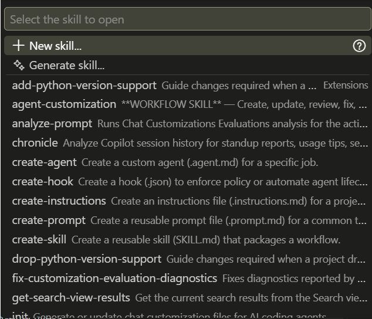

.png)
Create a Memory File and Install a Skill
Day 1 · Intro to Agentic AI at the WBG
Kristoffer Bjärkefur
Impact Analytics
5 October 2026
Project and Objective
Project to use
- We recommend that you use your own project for this (and all the following hands-on sessions)
- If you do not have a project for this bootcamp, we will have a demonstration example available for each hands-on session. For this session, you can download and use this demo project
Objective
- Set up a memory file - jump to section
- Install a skill - jump to section
Set Up a Memory File
Starting fresh or using a template?
- For this exercise, we will create a memory file from scratch
- This will help you to practice and consider each piece of information you include.
- Going forward, you’re more likely to start with a template or a memory file from another project.
At the end of this slide deck, you will see a link to some example memory files. Feel free to look at them if you feel stuck during this exercise, but try to create your own without looking at the templates first.
Use the agent to create the memory file?
- It is also possible to use the agent itself to create the memory file.
- Some agents provide so-called slash commands.
- One example is
/init, which creates a memory file for you. - However, memory files created by
/inittend to be verbose and are usually based only on what the agent finds in the project folder. - They may not include the project-owner guidance that you want all future edits to follow.
- Still, feel free to ask the agent to add sections that are tedious to type, such as the folder structure. Afterwards, add the information that you, as the project owner, want all contributors to know.
Set up a new AGENTS.md
In the root folder (the top folder) of your project folder, create a new file called AGENTS.md. Then go through the next slides and follow the suggested content.
No one gets an AGENTS.md file perfect the first time, so do not make that your worry for this session. The memory file should be a living document where, throughout the project, you add details that the agent needs to perform tasks as you want it to.
Remember that every project is unique, and you should tailor your memory file to fit your specific project’s needs. The suggested content is just a guideline. Compare it to RA onboarding documents: there are some sections that RA onboarding documents typically include, but the exact content is different.
Memory File Content
- Making these agents work for your specific field is not only a technical question; it is also a domain-knowledge question.
- Each field still has a lot to learn before fully understanding how to best onboard AI agents for their specific needs.
- There is no universal best practice yet for these files - but we will offer several examples commonly used.
Common Sections
- Project description
- Folder structure
- Data descriptions
- Software preferences
- Research design
- Rules
Project Description
- For each request, the LLM looks at your project for the first time.
- Use LLMs to make a short summary of your concept note or analysis plan.
- Focus on details important to someone implementing your project, not details important to someone approving or funding it.
What Sets Your Research Apart from a generic example
What makes your project different from textbook examples or private-sector data science.
| Probably better | Probably worse |
|---|---|
| Developing-country context | The specific country |
| The novel research question | Just the general research topic |
| The type of data sources | A generic description of the topic |
Folder Structure and Important Files
File Structure
- Tell the agent where to find what and where to save what.
- Do not just list folders; also explain their intended usage.
File paths to specific files
Agents can also follow specific file paths. For example, if you have a file describing your treatment assignment in an RCT, you can point to that file directly and add a description where that file is:
Data Descriptions
- Describe the location of input datasets.
- Describe the main variables in each dataset.
- Point to a codebook for full documentation.
Input Datasets
- `data/raw/census_2011.csv`:
- household demographics. Main variables: household ID and income.
- Full codebook: `data/raw/census_2011_codebook.csv`.
- `data/raw/firm_panel.dta`:
- firm-level output. Main variables: firm ID and sales.
- Full codebook: `data/raw/firm_panel_codebook.csv`.
- `data/raw/prices_monthly.csv`:
- monthly commodity prices. Main variables: commodity, region, month, and price.
- Full codebook: `data/raw/prices_monthly_codebook.csv`.Software Preferences
- List the tools you want to use.
- Specify the programming language and packages.
- Specify data packages, such as
dplyrversusdata.table. - Specify output formats for tables and visualizations.
- Specify the dynamic document type.
Example
Programming Preferences
- Include preferred best practices, such as using a main do-file that runs all other code.
- Include naming conventions.
Code Writing Guidelines
Research Design and Preferences
- This is an area where you will always know better than the agent what is valid in your context.
- The next session will provide a more specific tool, skills, for detailed steps. For now, list a high-level description of the research design.
- Include the randomization strategy, units of randomization, treatment modality, and so on.
- Include preferences such as “always use OLS.”
Rules
Telling the agent what not to do is just as important as telling it what to do.
Examples:
- Packages and tools not to use
- Files not to edit
- Anything else you have ever told an RA not to do
- Do not execute R code using the command line command
R, always useR.exe<- WB Windows computer requirement
Keep Memory Files Concise
After you set up your memory file, take some time to review it and see if it can be made more concise without losing important context.
- Since the memory file is included in every request you make, keeping it concise helps you use tokens efficiently and preserve your token budget.
- Adding all onboarding information to the memory file would soon leave little space for the actual task in the context window.
- Use targeted ways to load context only when needed. For example, move a verbose section to a separate file in your project and link to it in the memory file. Include a description next to that link that tells the agent when to load that file into context.
- If you are unsure, it is still better to add relevant context to the memory file than to omit it, even if it is not the most token optimized option. This is an art more than a science.
Templates and Adaptation
We have started a resource hub at https://github.com/dime-worldbank/coding-agents-hub/tree/main/memory-files.
The examples in the example-library folder are mature memory files specific to the projects they were created for. It is very unlikely that they will be a good fit for your project as-is. Still, you can use them as references and draw inspiration from them.
Install a Skill
Which Skill?
- If you know which skill you want to use for your project, use that skill.
- If you do not have a particular skill in mind, we recommend using the Impact Analytics skill for preparing reproducibility packages.
- This skill helps you set up a reproducibility package that follows the standards of the World Bank’s Reproducibility Initiative.
How to Install
- Open your project in a VS Code workspace.
- Locate or create your skills folder.
- We recommend using the general open-source location
.agents/skills/. If you do not already have a skills folder, create one at the root (top-level folder) of your workspace.
- We recommend using the general open-source location
- Download the complete folder for the skill you want to use to your computer.
- Copy the complete skill folder, including all its contents, into your workspace’s skills folder.
That is all you need to install the skill.
Verify the Skill Installation
- Type
/skillsin the Agent chat, press Enter, and confirm that your skill is listed. - As you can see, agents come with pre-installed slash commands. Test and explore them at some point!
- See whether any of those skills can help you with something you were not sure how to do manually.

Using the Skill
Three different ways, each with its own nuances, to trigger and use the skill with the agent:
Trust agent to detect skill
Force skill without context
Force skill with context
The agent will use skill descriptions to determine whether any appropriate skills are installed.
This forces the agent to use that skill. All instructions for the task are expected to be in the skill.
This forces the agent to use that skill, while you add project-specific instructions to the general instructions in the skill.
AI-Enabled Research Bootcamp